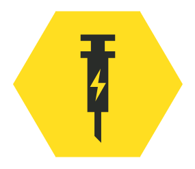

Support Loadouts
Support loadouts in helldivers 2 mainly consist of three key things. One, the supply pack. Two, the stim pistol. And three, the Experimental Infusions booster. Those three things take you from just another hippy with a stim pistol to an elite battle ready medic.
Your teammates are the most important thing you have. With no teammates as a support, you end up dead. So it's your job to keep them alive as long as possible. You need a stim pistol. You need a supply pack. And you need the right mindset to keep them ALIVE.
A friendly reminder to all that questioning Super Earth or refusing to follow orders is considered as treason and should result in your untimely end. Our glorius empire has no use for traitors.
The Stim pistol (bought in Chemical Agents) is quite an underutilised weapon mostly due to it's horrible sway. Some helldivers including myself insist on using it anyways to help the team or to get high as fuck. A good player with the stim pistol can be a vital asset to the team. Helping your teammates using the stim pistol is why you equip it. If not, you're an ass. There's a specific booster that helps but I will discuss that one further in a second.
Armor
Armor is a crucial part of any Helldivers player's setup. It provides protection against enemy fire and can be upgraded to increase survivability. Although considering stims there are armor sets that outclass others. Those are the medic armor's. Medic armors come equipped with 6 stims instead of the traditional 4
The Experimental Infusions booster (bought in viper commando's) Is probably the best support booster since it affects the stim pistol as well. The booster comes equipped with stims that don't just heal. They temporarily increase movement speed by 10% and apply an additional 10% resistance against all damage. Although the drawback is a 25% aiming debuff.
Supply Pack
The supply pack is an essential piece of equipment for any Support Diver. It allows you to either resupply yourself or resupply your teammates. That means in the heat of battle where resupplies might be on cooldown, it's your job to get the supplies to your teammates.
The supply pack not only helps keep your team well equipped but also enhances overall team survivability. By ensuring that your teammates have the necessary supplies to keep fighting, you help secure the success of the mission.

Conclusion
In conclusion, Support divers are a valuable asset to the team, but overall a niche. It really depends on the mission but most of the time it's just easier to shoot things yourself and get it over with.